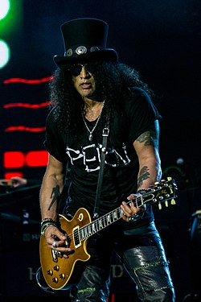
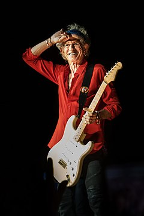
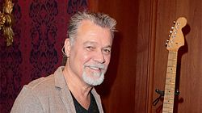

Powerage (1978)
- Powerage é o quinto álbum do AC/DC, lançado em 25 de Maio de 1978, e também é o primeiro álbum que não contém uma faixa homônima.
Foi o primeiro álbum do AC / DC a apresentar Cliff Williams no baixo, e também foi o primeiro álbum do AC/DC a não ter uma faixa-título (Como "Powerage" além do álbum - High Voltage exclusivo da Austrália). - Powerage foi relançado em 2003 como parte da série AC/DC Remasters.
Embora as vendas iniciais tenham sido um tanto decepcionantes, - Powerage ultrapassou seu antecessor, Let There Be Rock, alcançando a posição #133 na parada de álbuns pop da Billboard nos Estados Unidos, eventualmente obtendo o certificado de platina. Eddie Van Halen e o guitarrista dos Rolling Stones, Keith Richards, afirmaram que o - Powerage continua sendo seu disco favorito do AC/DC. O álbum manteve-se um favorito de Malcolm Young, que foi citado em - AC/DC: Maximum Rock & Rolldizendo, "Eu sei que muitas pessoas o respeitam, muitos fãs de rock and roll de verdade, do AC/DC, os caras do rock and roll puro. Acho que é o álbum mais subestimado de todos."
O álbum conta com faixas históricas que vieram a se tornar um dos maiores clássicos de todos os tempos. Guitarristas como
Slash,
Keith Richards,
Eddie Van Halen,
Gene Simmons,
Ron Wood, afirmam sua paixão pelo AC/DC, tendo como em especial o álbum - Powerage.
É o primeiro trabalho com o baixista
Cliff Williams, que entrou substituindo
Mark Evans.
Anos depois, Evans afirmou que parte do álbum contém linhas de baixo tocadas por ele.
Saul Hudson, "Slash", é um guitarrista anglo-americano mundialmente famoso como integrante da formação clássica da banda Guns N' Roses,
com quem alcançou sucesso mundial.
Em sua carreira posterior, Slash integrou algumas outras bandas de diversos estilos, bem sucedidas em sua maioria.
 Keith Richards é um cantor, músico, compositor e ator britânico, considerado um dos grandes nomes do rock do século XX.
Richards é mais conhecido como integrante do The Rolling Stones e é considerado um dos mais influentes guitarristas da história, sendo eleito o #4° maior guitarrista de todos os tempos pela revista americana Rolling Stone.
 Edward Lodewijk Van Halen, "Eddie Van Halen", foi um guitarrista, compositor e produtor musical norte-americano nascido nos Países Baixos, co-fundador da banda Van
Halen.
Um dos maiores guitarristas de todos os tempos, Van Halen ajudou a popularizar a técnica de solo de guitarra conhecida como tapping, permitindo que arpejos rápidos fossem tocados com as duas mãos no braço da guitarra. Foi eleito
o melhor guitarrista de todos os tempos, por uma votação promovida pela revista Guitar World, que contou com quase 500 mil votos.
 Gene Simmons, "Chaim Witz", é o vocalista, baixista e fundador da banda Kiss.
Gene Simmons, "Chaim Witz", é o vocalista, baixista e fundador da banda Kiss.
Simmons é mais conhecido pelo seu apelido "The Demon". Junto com o também vocalista Paul Stanley, Simmons é o único membro remanescente da formação original do Kiss, e participou de todos os álbuns da banda.
Foi eleito o 50° melhor baixista de todos os tempos pela equipe da Loudwire e o 29° melhor vocalista de heavy metal e hard rock de todos os tempos pela revista Hit Parader.
 Ronald David Wood, "Ron Wood", é um guitarrista, compositor, multi-instrumentista, artista, autor e celebridade de rádio de rock and roll britânico.
Ronald David Wood, "Ron Wood", é um guitarrista, compositor, multi-instrumentista, artista, autor e celebridade de rádio de rock and roll britânico.
Mais conhecido como ex-integrante dos The Faces, e integrante atualmente do The Rolling Stones.
 Clifford Williams nasceu no dia 14 de Dezembro de 1949 é um baixista Inglês, conhecido por tocar pelo AC/DC desde Junho de 1977.
Clifford Williams nasceu no dia 14 de Dezembro de 1949 é um baixista Inglês, conhecido por tocar pelo AC/DC desde Junho de 1977.
Seu estilo musical é conhecido por linhas básicas de baixo que seguem o ritmo da guitarra; sua técnica é centrada em downpicking com uso ocasional de pizzicato.
 Mark Evans (2 de março de 1956)é um baixista australiano, mais conhecido como um dos primeiros baixistas do AC/DC, onde participou de cinco discos entre 1975 e 1977.
Mark saiu da banda por desentendimentos com o guitarrista Angus Young.
Mark Evans (2 de março de 1956)é um baixista australiano, mais conhecido como um dos primeiros baixistas do AC/DC, onde participou de cinco discos entre 1975 e 1977.
Mark saiu da banda por desentendimentos com o guitarrista Angus Young.
Em 2011, Mark lançou o livro: Dirty Deeds: My Life Inside / Outside of AC / DC, que conta os bastidores das gravações com o AC/DC, além de suas memórias dos shows com o grupo.
O album atingil certificação:
| Nivel | Albuns Vendidos |
| Platina | + 1.000.000 (EUA.) |
| Ouro | + 250.000 (Alemanha) |
| 3X Platina | + 210.000 (Austrália) |
| Ouro | + 100.000 (França) |
| Ouro | + 100.000 (Reino Unido) |
| Ouro | + 50.000 (Espanha) |
| Ouro | + 25.000 (Suíça) |
Gênero(s):
- Hard rock
- Blues
- Rock
- Rock and Roll
Duração do album: 39 minutos e 47 segundos
Gravadora(s): Albert Productions
Produção: Harry Vanda e George Young
 Ronald Belford Scott ( 9 de julho de 1946 — 19 de fevereiro de 1980) foi um cantor e compositor australiano nascido na Escócia. Ele ficou mundialmente conhecido
por ser vocalista e compositor da banda de rock australiana AC/DC de 1974 a 1980.
Ronald Belford Scott ( 9 de julho de 1946 — 19 de fevereiro de 1980) foi um cantor e compositor australiano nascido na Escócia. Ele ficou mundialmente conhecido
por ser vocalista e compositor da banda de rock australiana AC/DC de 1974 a 1980.
 Malcolm Mitchell Young (6 de janeiro de 1953 — 18 de novembro de 2017) foi um guitarrista e compositor escocês naturalizado australiano e fundador, junto
com seu irmão mais novo Angus Young, do AC/DC, da qual era o guitarrista rítmico, vocalista de apoio e compositor.
Malcolm Mitchell Young (6 de janeiro de 1953 — 18 de novembro de 2017) foi um guitarrista e compositor escocês naturalizado australiano e fundador, junto
com seu irmão mais novo Angus Young, do AC/DC, da qual era o guitarrista rítmico, vocalista de apoio e compositor.
 Phillip Norman Hugh Rudd, nasceu com o nome de Hugh Phillip Norman Witschke Rudzevecuis. Nascido em 19 de Maio de 1954, é um baterista australiano.
Ocupou o cargo de 1975 até 1983 e novamente de 1994 até a data presente na banda AC/DC. Após a saída do baixista Mark Evans em 1977, Phil se tornou o único membro australiano na banda.
Phillip Norman Hugh Rudd, nasceu com o nome de Hugh Phillip Norman Witschke Rudzevecuis. Nascido em 19 de Maio de 1954, é um baterista australiano.
Ocupou o cargo de 1975 até 1983 e novamente de 1994 até a data presente na banda AC/DC. Após a saída do baixista Mark Evans em 1977, Phil se tornou o único membro australiano na banda.
 Harry Vanda (22 de Março de 1946), é um músico e produtor popular da Austrália, famoso por trabalhar com a banda AC/DC
Harry Vanda (22 de Março de 1946), é um músico e produtor popular da Austrália, famoso por trabalhar com a banda AC/DC
 Alfred Redburn Young ( 6 de novembro de 1946 - 22 de outubro de 2017) foi um músico australiano de rock, compositor e produtor musical, mais conhecido como
integrante da banda The Easybeats, o co-autor de sucessos internacionais, tais como "Friday on My Mind" e "Love Is in the Air", e por sua produção da banda de hard rock AC/DC.
Alfred Redburn Young ( 6 de novembro de 1946 - 22 de outubro de 2017) foi um músico australiano de rock, compositor e produtor musical, mais conhecido como
integrante da banda The Easybeats, o co-autor de sucessos internacionais, tais como "Friday on My Mind" e "Love Is in the Air", e por sua produção da banda de hard rock AC/DC.